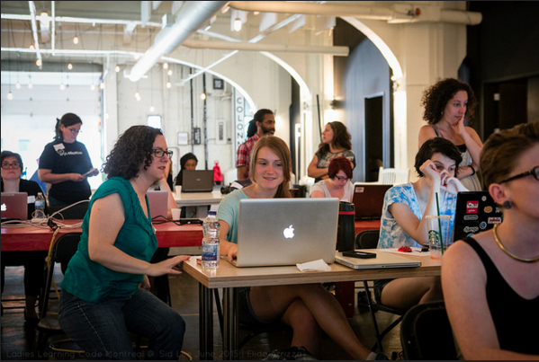
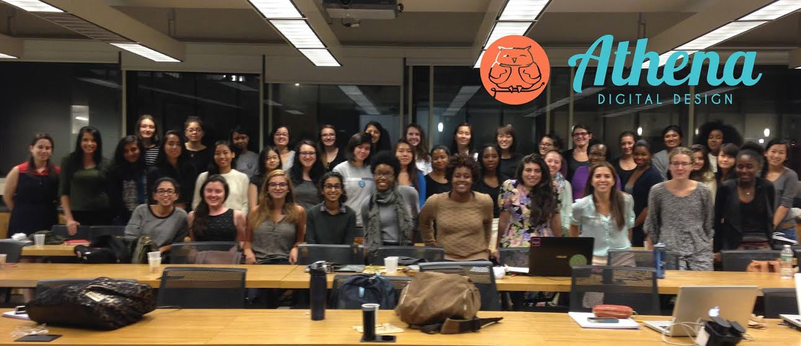

Coding is the language of the future. Become literate with Athena Digital Design.
Is this what you think of when you think of coding?
What coding should look like!
Athena Digital Design trains students to develop websites, in order to provide these services, for hire, to the community. Our mission is to champion and inspire Barnard women on their journey into coding literacy through web development. 
Once students have successfully completed our 10-week Introduction to Web Development HTML/CSS Course, students will have the opportunity to apply to the Athena Digital Design Agency, which connects local businesses and organizations with students to help build or maintain their web sites.
Our classes meet once a week for 2 hours over 10 week. We offer community office hours to provide additional support for students.
NOTE: NO CODING EXPERIENCE or computer science background will be required for participation and applications will be open to ALL Barnard students.
This class is perfect for students who would like to learn the basics of web development! Students will successfully complete several websites by the completion of this course.
application link: http://tinyurl.com/qa3cpzr
Full Stack (MEAN)
Students will learn everything from the front to the back of web development. By the end of this course, students will be able to make their own games that run in the browser and will have the skills to replicate basic versions of craigslist, twitter or facebook. Students will additionally learn how to data scrape.
Interactive JavaScript
Students will learn the front end of web development as well as how to make mobile apps that leverage firebase, a real time database to store data. By the end of this course, students will be able to make their own games that run in the browser and will have the skills to make their own mobile apps.
This is a good investment in learning web development at Barnard and students will make the money back on their first web development job from Athena Digital Design Agency or freelance after these courses.
| Course | Cost Per Class | Total Cost |
|---|---|---|
| ADDA Web Development Course - 10 Week Course | $15 | $150 |
| General Assembly NYC - 3 Day Course | $185 | $550 |
Members of the Student Advisory Board take on a leadership position on the agency startup team in various capacities ranging from project management, finance, marketing, and more.
If you've already taken an ADDA course and you are not graduating this year, you can apply to join the Student Advisory Board here: http://tinyurl.com/pokuql7 Deadline is December 16th, 2015.
After successfully finishing the final project and graduating from HTML/CSS course, students will have an opportunity to apply to work for the Agency.
After being accepted to the Agency, students can pick any jobs that are of their interest from the Agency job posting and start earning money! Money earned from ADDA jobs counts towards work-study and Barnard College job awards
https://www.facebook.com/athenaDigitalDesignAgency/
Make sure to stay here for ADDA Graduation afterwards from 6-8 pm if you want to see ADDA students’ websites presentations! Tiffany Pham, Founder & CEO of Mogul is also joining us for graduation this year!